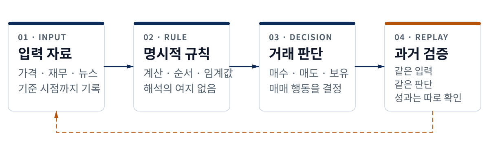
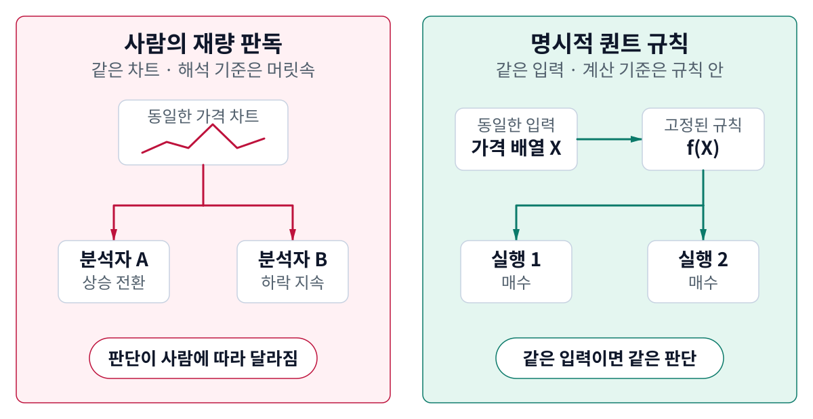
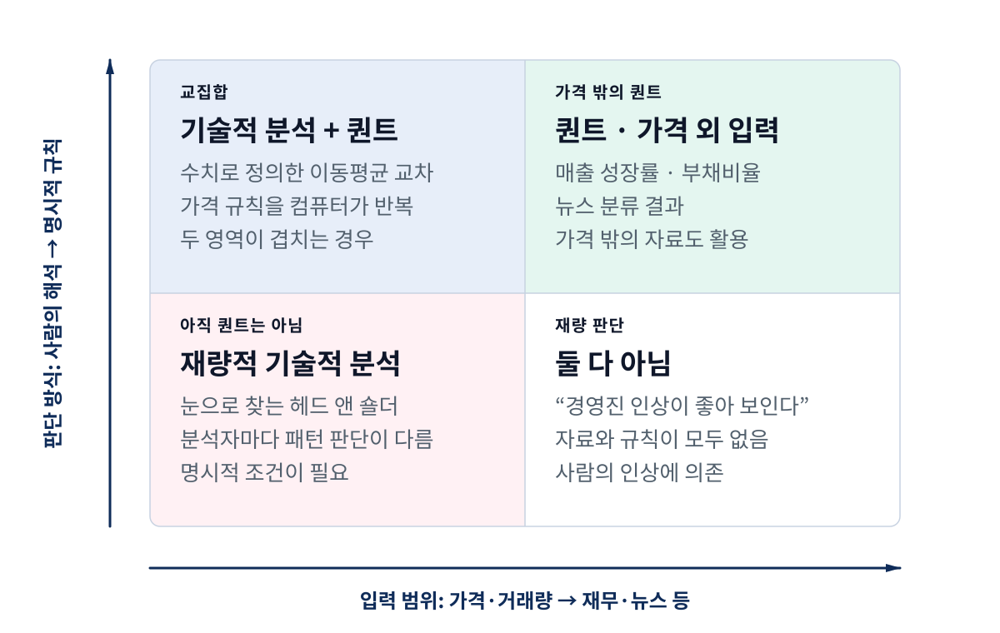
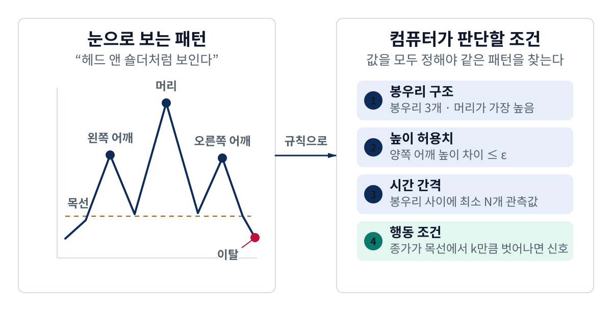
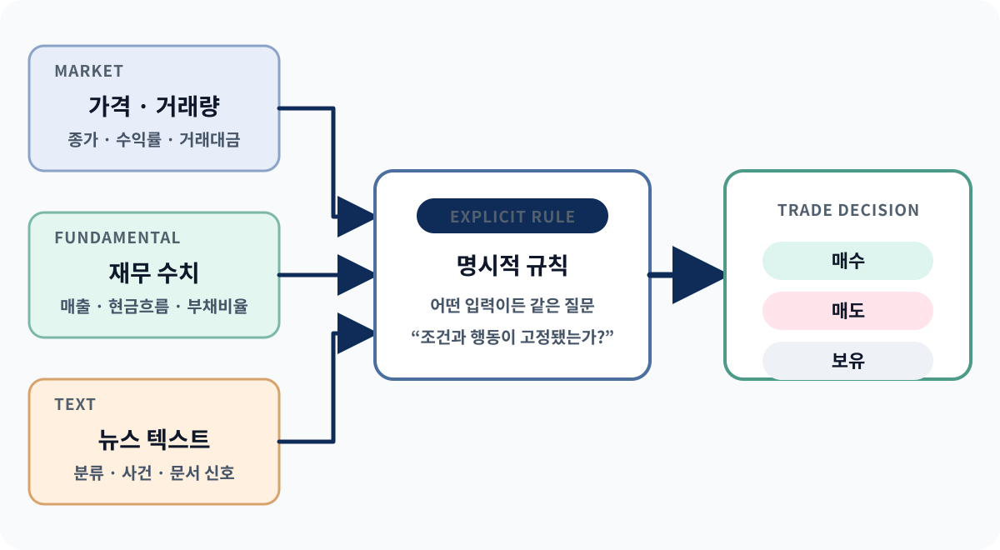
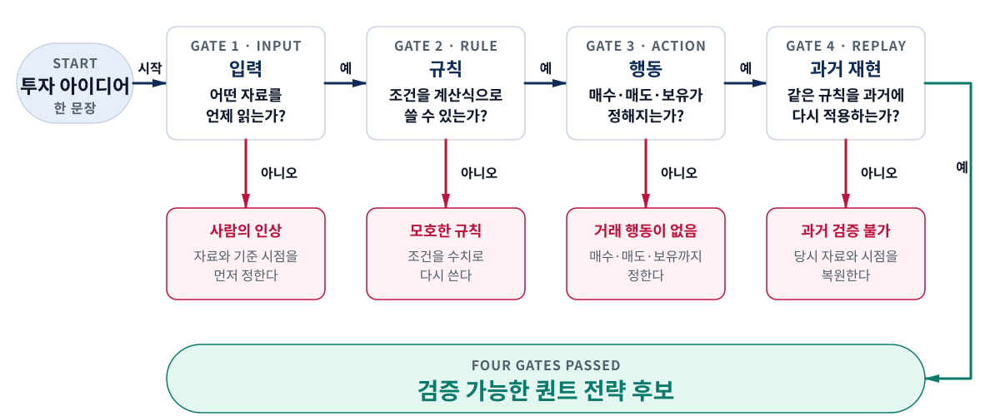

정의
퀀트 여부를 가르는 기준
퀀트 트레이딩의 정체
무엇을 보느냐보다 어떻게 판단하느냐가 중요하다
과정 1 · 영상 1 · 교재 1권 1장 2.1–2.2절
숫자·차트·컴퓨터 가운데 하나만으로는 퀀트가 되지 않는다
같은 입력이면 같은 판단이 나와야 한다
기술적 분석은 명확한 규칙이 될 때 퀀트와 겹친다
퀀트 여부를 가르는 기준
기술적 분석과 겹치는 곳
가격 밖의 입력까지 보기
네 질문으로 빈칸 찾기
첫째 · 정의
자료를 모으는 것만으로는 전략이 되지 않는다

Chan (2021), Rossi & Tinn (2021), SEC Staff (2020)을 학습용으로 재구성
무엇을 썼는가보다 판단을 어떻게 정했는가를 본다
| 질문 | 답 |
|---|---|
| 차트를 쓰면 모두 퀀트인가 | 사람이 모양을 판단하면 아니다 |
| 기술적 분석은 퀀트인가 | 조건을 완전히 적으면 겹칠 수 있다 |
| 퀀트는 가격만 보는가 | 재무 수치와 뉴스도 입력이 된다 |
| 자동 주문이 꼭 필요한가 | 중심은 주문 속도가 아니라 판단이다 |
| 코드로 만들면 수익이 나는가 | 코드화 가능성과 수익성은 별개다 |
상세 리포트 표 1 · 확인일 2026-08-25
한 부분이라도 비면 누군가가 그때그때 판단해야 한다
| 구성 요소 | 확인할 질문 | 빠지면 생기는 문제 |
|---|---|---|
| 입력 | 데이터로 읽을 수 있는가 | 눈으로만 느끼는 인상은 계산할 수 없다 |
| 판단 규칙 | 조건과 순서를 모두 적었는가 | 사람마다 해석이 달라진다 |
| 행동 | 매수·매도·보유가 정해지는가 | 지표만 있고 거래 결정이 없다 |
| 과거 검증 | 같은 규칙을 과거에 적용할 수 있는가 | 정의와 성과를 구분할 수 없다 |
상세 리포트 표 2 · AIML Quant 학습용 점검 기준
사람의 판단이 사라지는 것이 아니라 판단 시점이 앞당겨진다

Lo, Mamaysky & Wang (2000)의 주관성 문제를 학습용으로 재구성
둘은 함께 자동화할 수 있지만 같은 개념은 아니다
투자·거래 판단
주문 라우팅·체결
SEC Staff (2020), MiFID II Art. 4(1)(39)
둘째 · 관계
가격을 보는가와 판단을 완전히 적었는가를 나누어 본다

Chan (2021), Lo, Mamaysky & Wang (2000)을 바탕으로 재구성
기술적 분석의 일부는 퀀트가 되고, 퀀트의 일부는 차트를 보지 않는다
| 판단 방식 | 가격·거래량 중심 | 재무·뉴스 등 다른 입력 |
|---|---|---|
| 규칙을 완전히 적음 | 기술적 분석 + 퀀트 | 퀀트, 전통적 기술적 분석은 아님 |
| 사람의 해석이 남음 | 재량적 기술적 분석 | 재량 판단 |
상세 리포트 표 3 · 교재 1권 1장 2.1–2.2절
헤드 앤 숄더를 찾으려면 모양을 수치 조건으로 바꿔야 한다

Lo, Mamaysky & Wang (2000)의 자동 패턴 인식 절차를 학습용으로 단순화
코드화할 수 있다는 것은 검증을 시작할 수 있다는 뜻이다
사람이 보는 문장
봉우리와 목선을 보는 기준이 사람마다 달라진다
컴퓨터가 읽는 규칙
같은 차트에서 같은 행동을 다시 만들 수 있다
셋째 · 입력 범위
가격·재무·뉴스 모두 컴퓨터가 읽는 형태와 명확한 행동 규칙이 필요하다

Chan (2021), Fama & French (1993), Tetlock (2007)을 바탕으로 재구성
입력 자료만 보고 퀀트 여부를 정할 수 없다
| 아이디어 | 입력 | 규칙 | 분류 |
|---|---|---|---|
| 20일선이 60일선을 상향 돌파하면 매수 | 종가 | 기간·교차·행동 고정 | 기술적 분석 + 퀀트 |
| 상승할 것처럼 보여 매수 | 차트 | 보인다는 기준 없음 | 재량적 기술적 분석 |
| 매출 성장률이 기준보다 높으면 편입 | 재무 수치 | 계산식·기준·시점 고정 | 퀀트 |
| 뉴스가 특정 범주면 비중 조정 | 뉴스 | 분류와 행동 연결 | 퀀트 |
| 회사 분위기가 좋아 보여 매수 | 사람의 인상 | 반복 규칙 없음 | 둘 다 아님 |
상세 리포트 표 4 · 예시는 분류 설명용이며 수익성을 뜻하지 않는다
넷째 · 흔한 착각
겉으로는 퀀트처럼 보여도 판단이 완결되지 않을 수 있다
숫자에서 행동으로 가는 조건이 남아 있다
모호한 말이 코드에서 어떤 값이 됐는지 모른다
같은 거래를 다시 만드는 정의가 고정되지 않았다
Bailey et al. (2017)은 반복 탐색이 백테스트 과적합을 낳을 수 있음을 별도 문제로 다룬다
결과를 보기 전에 규칙의 빈칸부터 확인한다
| 착각 | 빠진 것 | 바로잡는 질문 |
|---|---|---|
| 지표를 계산했으니 퀀트다 | 행동 규칙 | 이 숫자가 얼마일 때 무엇을 하는가 |
| 프로그램이 돌아가니 명확하다 | 요구와 구현의 일치 | 모호한 말이 코드에서 어떤 값이 되었는가 |
| 과거 수익이 좋으니 검증됐다 | 재현 가능한 정의 | 같은 입력으로 같은 거래를 만들 수 있는가 |
상세 리포트 표 5 · AIML Quant 학습용 점검표
코드화 가능성과 전략의 품질을 섞지 않는다
다섯째 · 최종 점검
입력·규칙·행동·과거 검증이 모두 이어져야 전략 후보가 된다

학술·규제 자료를 AIML Quant의 초보자용 네 질문으로 정리
이 표는 전략 후보의 빈칸을 찾는 기준이다
| 확인 항목 | 통과 기준 | 실패 예시 |
|---|---|---|
| 입력이 식별되는가 | 자료·필드·시점을 적는다 | 시장 분위기만 적혀 있다 |
| 조건이 계산 가능한가 | 수식·순서·임계값이 고정된다 | 충분히 크면이 남아 있다 |
| 행동이 결정되는가 | 매수·매도·보유가 정해진다 | 지표만 출력한다 |
| 반복 가능한가 | 같은 입력이면 같은 판단이 나온다 | 분석자마다 결론이 다르다 |
| 과거에 적용 가능한가 | 당시 알 수 있던 입력으로 실행한다 | 결과를 본 뒤 조건을 정한다 |
상세 리포트 표 6 · 통과해도 수익성·위험·실전 가능성은 증명되지 않는다
입력·규칙·행동·과거 검증을 세 문장에 적어 본다
어떤 자료의 어느 값을 언제 읽는가?
어떤 계산과 조건을 거쳐 행동을 정하는가?
같은 규칙을 과거 데이터에 다시 적용할 수 있는가?
정리
같은 입력에서 같은 판단이 나오는 명확한 규칙
기술적 분석은 규칙을 완전히 적을 때 퀀트와 겹친다
규칙을 적었다고 수익성이 증명되는 것은 아니다